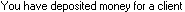
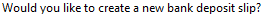
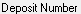
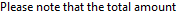

# creates new bank deposit slips each month # adds new transactions to them from sikuli import * import logging import myTools #---------------------------------------------------# def fPayment_CreateOne(pay_client,pay_month,pay_count,pay_amount): #---------------------------------------------------# logging.debug('- Pay_Create: ' + str(pay_month) + "-" + pay_client + " = " + str(pay_amount)) # new payment myTools.getFocus() type("n",KeyModifier.CTRL) logging.debug('-- new') myTools.waitForTransEntry() # type type(Key.TAB) # source type(Key.TAB) # check number check_num = "pay-" + str(pay_count) + "-" + str(pay_month) type(check_num) type(Key.TAB) time.sleep(1) # client myTools.enterClient(pay_client) # date pay_date = str(pay_month) + "/28/" + Settings.dataYear type(pay_date) time.sleep(1) type(Key.TAB) # skip deposit slip type(Key.TAB) # Amount type(str(pay_amount)) type(Key.TAB) # Description type("a",KeyModifier.CTRL) type("bds-pay: " + pay_client + " - " + pay_date) type(Key.ENTER) time.sleep(1) # close / save logging.debug('-- close/save') type(Key.F4,KeyModifier.CTRL) time.sleep(1) type(Key.ENTER) time.sleep(5) myTools.checkForUnappliedAmount() #---------------------------------------------------# def fPayToAccount_CreateOne(pta_client,pta_month,pta_count,pta_amount): #---------------------------------------------------# logging.debug('- PTA_Create: ' + str(pta_month) + "-" + pta_client + " = " + str(pta_amount)) # new pta myTools.getFocus() type("n",KeyModifier.CTRL + KeyModifier.SHIFT) logging.debug('-- new') myTools.waitForTransEntry() # skip type type(Key.TAB) # skip deposit slip type(Key.TAB) # client myTools.enterClient(pta_client) # account type(Key.END) type(Key.TAB) # date pta_date = str(pta_month) + "/28/" + Settings.dataYear type(pta_date) time.sleep(1) type(Key.TAB) # check number check_num = "pta-" + str(pta_count) + "-" + str(pta_month) type(check_num) type(Key.TAB) time.sleep(1) # Amount type(str(pta_amount)) type(Key.TAB) # Description type("a",KeyModifier.CTRL) type("bds-pta: " + pta_client + " - " + pta_date) type(Key.ENTER) time.sleep(1) # close / save logging.debug('-- close/save') type(Key.F4,KeyModifier.CTRL) time.sleep(1) type(Key.ENTER) time.sleep(5) if exists(): logging.debug('--- deposited msg exists') type("n") time.sleep(1) #---------------------------------------------------# def fDepToAccount_CreateOne(dep_client,dep_month,dep_count,dep_amount): #---------------------------------------------------# logging.debug('- DEP_Create: ' + str(dep_month) + "-" + dep_client + " = " + str(dep_amount)) # new dep myTools.getFocus() type("d",KeyModifier.CTRL + KeyModifier.SHIFT) logging.debug('-- new') myTools.waitForTransEntry() # skip type type(Key.TAB) # skip deposit slip type(Key.TAB) # client myTools.enterClient(dep_client) # account type(Key.END) type(Key.TAB) # date dep_date = str(dep_month) + "/28/" + Settings.dataYear type(dep_date) time.sleep(1) type(Key.TAB) # check number check_num = "dep-" + str(dep_count) + "-" + str(dep_month) type(check_num) type(Key.TAB) time.sleep(1) # Amount type(str(dep_amount)) type(Key.TAB) # Description type("a",KeyModifier.CTRL) type("bds-dep: " + dep_client + " - " + dep_date) type(Key.ENTER) time.sleep(1) # close / save logging.debug('-- close/save') type(Key.F4,KeyModifier.CTRL) time.sleep(1) type(Key.ENTER) time.sleep(5) if exists(): logging.debug('--- deposited msg exists') type("n") time.sleep(1) #---------------------------------------------------# def fBankDepositSlip_CreateOne(bds_month): #---------------------------------------------------# # open bank deposit slip list logging.debug('- open bds list') type("t",KeyModifier.ALT) type("b") time.sleep(2) logging.debug('- wait for message') wait(,60) type("n") time.sleep(2) # create a new deposit slip logging.debug('- create new bds') rightClick() time.sleep(2) type(Key.DOWN) type(Key.ENTER) time.sleep(2) # for even months, use "new bank" otherwise use "default" if bds_month % 2 == 0: logging.debug('-- new bank') type(Key.END) else: type(Key.HOME) logging.debug('-- default bank') type(Key.TAB) # date bds_date = str(bds_month) + "/28/" + Settings.dataYear type(bds_date) time.sleep(1) type(Key.TAB) # planned bds_planned = bds_month * 10 type(str(bds_planned)) time.sleep(1) # close type(Key.ENTER) time.sleep(1) #---------------------------------------------------# def fBankDepositSlips_Create(bds_month): #---------------------------------------------------# myTools.sectionStartTimeStamp("bank deposit slip") logging.debug('BankDepositSlip_Create') # make sure timeslips has focus myTools.getFocus() fBankDepositSlip_CreateOne(bds_month) clientList = ["Hadley","Halifax"] bds_count = 0 # add transactions to deposit slip for bds_client in clientList: bds_count += 1 trans_amount = 30 + bds_count + bds_month/float(100) fPayment_CreateOne(bds_client,bds_month,bds_count,trans_amount) trans_amount = 20 + bds_count + bds_month/float(100) fPayToAccount_CreateOne(bds_client,bds_month,bds_count,trans_amount) trans_amount = 10 + bds_count + bds_month/float(100) fDepToAccount_CreateOne(bds_client,bds_month,bds_count,trans_amount) # close type(Key.F4,KeyModifier.CTRL) time.sleep(1) if exists(): type(Key.ENTER) time.sleep(1)